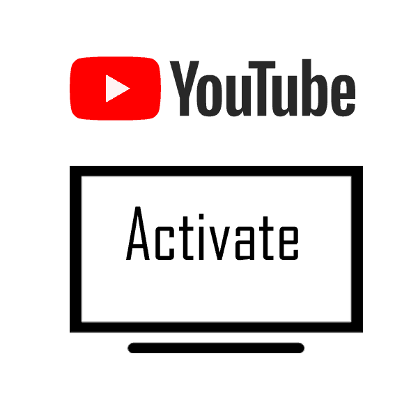

yt.be/activate
Typically, the YouTube activation link yt.be/active" is often used to verify user accounts or devices for certain features or services. They can be used for activities such as activating a YouTube account on a smart TV, game console, or other device to enable streaming and access to personalised content. "yt.be/active" is a short link to the YouTube activation process.

How to create an account on YouTube?
Here are the very easy steps, by following which you can easily sign in on YouTube and create your own channel on YouTube.
- Open YouTube (youtube.com/active) in your Web browser.
- Now go to the YouTube homepage.
- Then, in the top right, click on the Sign in button.
- Once you click on the "Sign In" button, you will be taken to the Sign-In page.
- Now you'll see options to sign in with your existing Google account or create a new one.
- Note: If you would like to create a new account, click on the "Create an account" link. And if you want to sign in with your existing Google account, enter your Gmail ID.
- Sign in with your Google account.
- You will receive a verification code on the mobile phone number that you have provided. To verify your account, enter the code in the field provided on the YouTube website, yt.be/active.
- Scroll down to the bottom of the page and click the checkbox to agree to YouTube's Terms of Service and Privacy Policy.
- Now you can explore YouTube, subscribe to channels, create playlists, and upload videos.